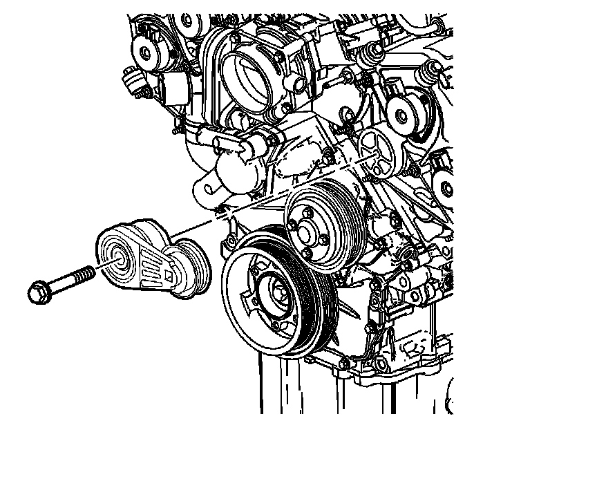
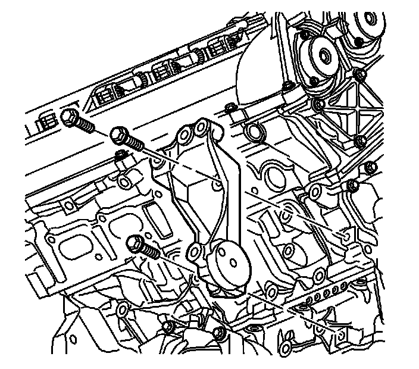
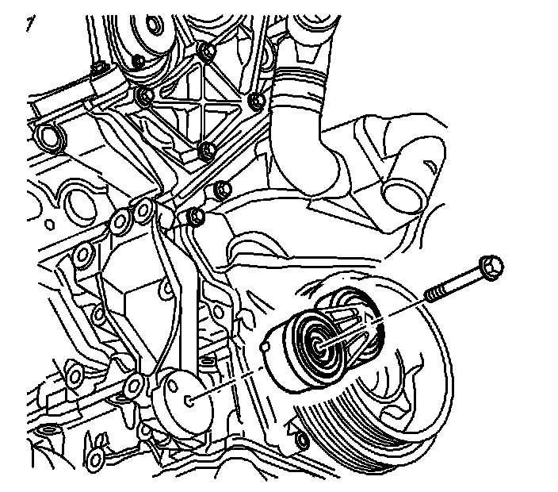

133. Drive Belt Tensioner Installation
Drive Belt Tensioner Installation
P/S Pump and A/C Compressor Drive Belt Tensioner

1. Place the P/S pump and A/C compressor drive belt tensioner in position to the camshaft position actuator housing. Ensure to properly locate the dive belt tensioner anchor pin in the recess in the camshaft position actuator housing.
Notice: Refer to Fastener Notice (Fastener Notice) .
2. Install the P/S pump and A/C compressor drive belt tensioner bolt.
Tighten the P/S pump and A/C compressor drive belt tensioner bolt to 50 N.m (37 lb ft).
Generator Drive Belt Tensioner

1. Place the generator bracket in position to the engine.
Notice: Refer to Fastener Notice (Fastener Notice) .
2. Loosely install the generator bracket bolts.
3. Tighten the generator bracket bolts in proper sequence.
* Tighten the generator bracket front upper bolt to 50 N.m (37 lb ft).
* Tighten the generator bracket rear upper bolt to 50 N.m (37 lb ft).
* Tighten the generator bracket lower bolt to 50 N.m (37 lb ft).

4. Place the generator drive belt tensioner in position to the generator bracket. Ensure to properly locate the drive belt tensioner anchor pin in the recess in the generator bracket.
5. Install the generator drive belt tensioner bolt.
Tighten the generator drive belt tensioner bolt to 50 N.m (37 lb ft).